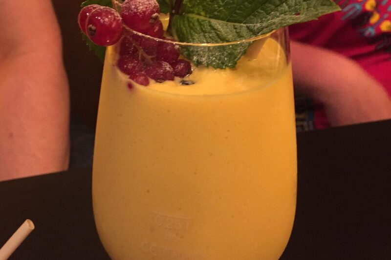

Drinks
Mango Lassi
Ripe mango blended with yogurt into a cold, creamy drink.
Vegetarian
Gluten-Free
Nut-Free

Sweet ripe mango blended with yogurt, a little sugar, and a pinch of cardamom -- a cooling drink that's just as at home with a spicy meal as on its own.
Ingredients
- 2 ripe mangoes, peeled and chopped, or 300g mango pulp
- 250 g plain yogurt
- 120 ml milk
- 2 tbsp sugar, or to taste
- pinch of ground cardamom
- ice cubes, to serve
Instructions
-
Very ripe, fragrant mangoes make all the difference here -- an underripe mango makes a thin, tart lassi that no amount of sugar fixes.
Notes
- Frozen mango chunks work well out of season and give an even thicker, colder lassi.
- Canned mango pulp (kesar or alphonso) is a good substitute when good fresh mangoes aren't available.
Nutrition Facts
| Nutrient | Amount |
|---|---|
| Calories | 210 kcal |
| Total Fat | 3 g |
| Saturated Fat | 2 g |
| Carbohydrates | 40 g |
| Fiber | 2 g |
| Sugar | 34 g |
| Protein | 7 g |
| Sodium | 65 mg |
| Cholesterol | 15 mg |
| Values are estimates based on standard ingredient data, not laboratory analysis. | |
Photo: Neitram, CC BY-SA 4.0. Cropped to 3:2 and re-encoded as WebP/JPEG for web delivery.
.JPG){kind=link}